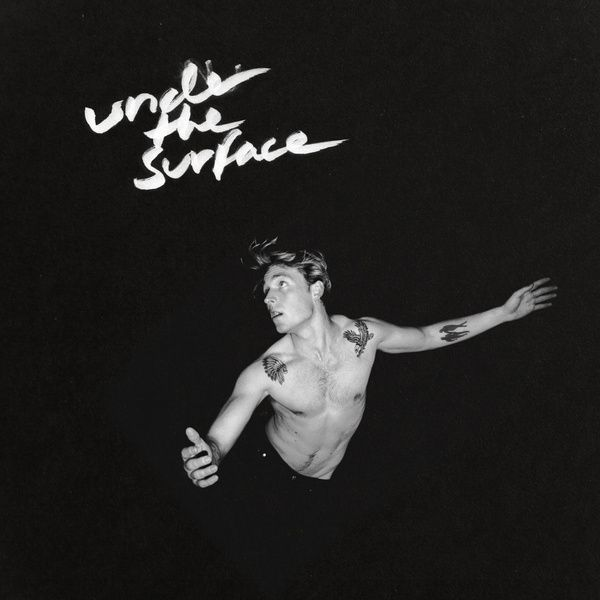
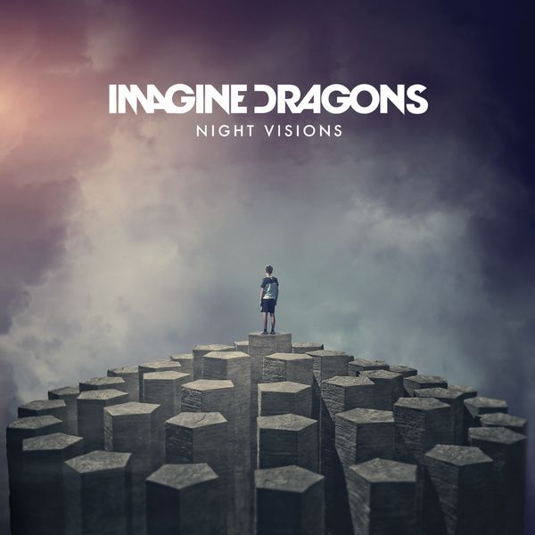
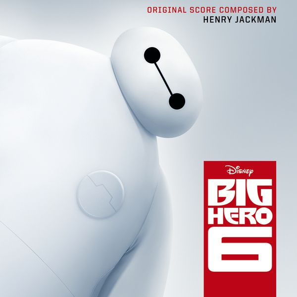

高揚
K-POP
POP SONG
MY PLAYLIST

Christopher - Bad
덴마크 출신 팝 가수인 크리스토퍼의 Bad. '움직이는 다비드상', '노래하는 다비드상'등의 수준급의 외모로 여심을 사로잡는 동시에, 매력적인 목소리까지 보유하고 있다. 그의 대표곡 Bad이다.
Imagine Dragons - Believer
이매진 드래곤스의 3번째 앨범 Evolve의 리드 싱글이자 그들의 대표곡 중 하나이다. 빌리버는 댄 레이놀즈로부터 온 호전적인 백 비트와 표현력 있는 목소리를 중심으로 쿵쾅거리며 고통을 포용하고 그것을 개인적 성장의 도구로 사용하는 메시지를 전달한다.
Fall Out Boy - Centuriesr
2015년에 발매된 폴 아웃 보이의 노래이다. 웅장한 도입부와 소년만화 주제가같은 느낌을 주는 에너지로 가득 찬 노래이다.

Imagine Dragons - Demons
이매진 드래곤스의 1번째 앨범 Night Visions의 노래. 가사의 demon은 흔히 생각하는 악마가 아닌 평범한 사람들 내면의 어둡고, 좋지 않은 생각 행동을 지칭한다. 그 악함을 이겨내고 순수함을 지키고 싶어하는 의지가 있다.
Watt White - Eye Of The Storm
Watt White 의 앨범 Eye Of The Storm의 대표곡. 헬스장에서 운동하다가 우연히 알고리즘에 재생되어 듣게 되었는데 그 날 운동이 잘 됐다.

Fall Out Boy - Immortals
2014년 개봉한 디즈니 애니메이션 빅 히어로의 사운드트랙이다. 폴 아웃 보이가 작사, 작곡했으며 노래도 불렀다. 작 중에서 히로 아르마다를 중심으로 스푸키맨에 대항하기 위해 빅 히어로 6가 결성되고, 각자의 특기에 맞는 장비를 제작하고 테스트해보는 장면에 등장한다.
Imagine Dragons - Natural
미국의 록밴드 이매진 드래곤스의 정규 4집 앨범의 첫번째 곡. 특이한 점으로 이 곡은 Dm, A7 단 2개의 코드만으로 만들어졌다고 한다.
Imagine Dragons - Radioactive
2012년 발매한 싱글. 빌보드 차트 최고 순위 3위, 무려 87주동안 차트에 머문 인기곡이다.
Fall Out Boy - The Phoenix
2013년에 발매된 폴 아웃 보이의 노래이다. 우리나라에서도 다들 한번 쯤은 들어봤을만한 노래로, 도입부의 사운드가 으마으마하다.
The Score - Legend
미국의 얼터너티브 록 밴드 The Score이 2017년 발매한 첫 정규앨범 Atlas의 수록곡이다. 현장감 넘치는 사운드로 콘서트에 간 기분이 들게 한다.
Imagine Dragons - Thunder
이매진 드래곤스의 3집 앨범 Evolve에 수록된 노래이다. 단조롭고 진부하다는 평이 있지만, 듣기 편한 멜로디와 중독성으로 흥행하였다.
Sam Ryder - Tiny Riot
영국 출신의 싱어송라이터 샘 라이더의 노래. 한국에서 샘 라이더를 알린 노래로 포효하는 듯한 강한 목소리가 인상적이다.